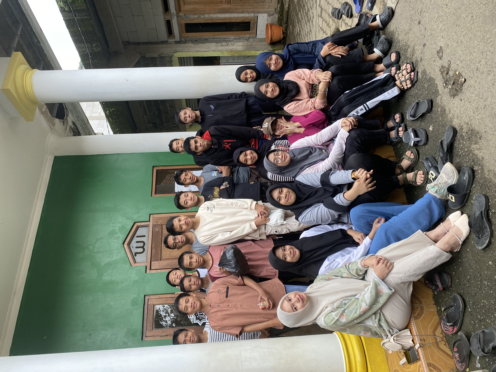

Bakti Sosial Membersihkan Mesjid
Kegiatan bakti sosial untuk membersihkan mesjid dan membantu masyarakat.
Tanggal: 4 Februari 2024

Buka Bersama
Menjalin kebersamaan dalam kehangatan, dengan berbuka bersama untuk mempererat tali silaturahmi.
Tanggal: Maret 2024

Pengambilan Raport PTS ganjil T.A 2024-2025
Pengambilan Raport dirumah Khairul Azzam.
Tanggal: 9 November 2024